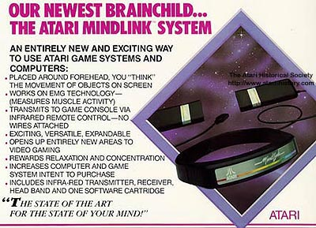
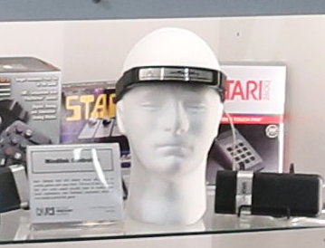

Atari Mindlink
Mind control (actually eyebrow control)

Overview
The Atari Mindlink was an unreleased controller for the Atari 2600 (and planned for Atari home computers and the 7800) that promised to let players control games with their minds. In reality it read myoneural signal voltage from forehead muscles using a headband with infrared sensors. Players moved game objects by twitching their eyebrows or forehead. The device was demonstrated at the 1984 Summer CES but was canceled after Atari’s consumer division was sold to the Tramiel family.
Deep dive
Atari explored biofeedback and alternative input as part of its push into novel game peripherals. The Mindlink grew out of earlier work on a biofeedback relaxation system and a project called “Bionics.” Because the medical-device market was small and carried liability concerns, Atari reworked the headband as a game controller.
The controller consisted of an elastic headband with three metal contact sensors pressed against the player’s forehead. It detected myoneural signal voltage (electrical activity associated with muscle contraction) in the forehead muscles. The signal was transmitted via infrared to a receiver connected to the Atari 2600 controller port. In its basic form the device supported only “bang-bang” control: moving an object left/right or up/down based on muscle tension. * An advanced lab prototype could reportedly control almost any Atari joystick-compatible software by strapping the headband to different muscle groups.
Three games were in development: Bionic Breakthrough (a Breakout clone), Telepathy, and Mind Maze (a pseudo-ESP card-guessing game). None were released. The 1984 Summer CES demo used simple Pong/Breakout-style software because the more advanced controller could not be finished in time.
The Mindlink is remembered as one of the earliest consumer brain–computer / biofeedback interfaces and a classic example of 1980s vaporware. It predated modern EMG-based and consumer EEG devices by decades and foreshadowed today’s interest in hands-free and thought-adjacent control.
Atari’s marketing claimed the device let you control games “with your mind,” but it actually responded to forehead muscle movement. Testers frequently got headaches from consciously moving their eyebrows to play. The day after the CES introduction, a representative of the Special Olympics approached Atari about developing sports software for disabled athletes; the project’s cancellation closed that opportunity. Proposed follow-ups included attaching sensors to forehead, biceps, and thighs for five-degree “bang-bang” control — essentially a Wii-style motion controller for the late 1980s.
Team & pioneers
- Atari, Inc. The project was developed internally at Atari's research and engineering labs as a controller for the Atari 2600.
- Unnamed engineering team Individual designers are not well documented; the headband was demonstrated at the 1984 Consumer Electronics Show and canceled shortly after.
Media

Sources
- Wikipedia, “Atari Mindlink.”
- Atari Museum, “The Atari Mindlink System.”
- Atari Compendium, “MindLink.”
- Chris Scullion, “The Atari Mindlink and other outrageous controllers,” Computer and Video Games, 10 Mar 2014.
- T3, “20 Worst game accessories ever.”
- YouTube, “Atari Mindlink (Atari 2600) Commercial 1984.”
- YouTube, “Anthony Jones, Atari UK; Atari Mindlink — interview.”